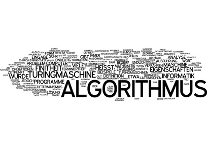
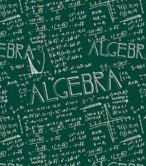
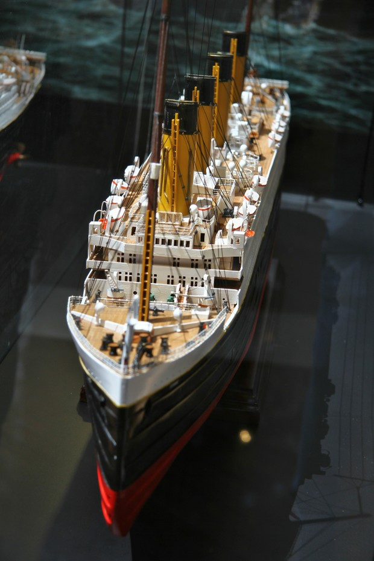
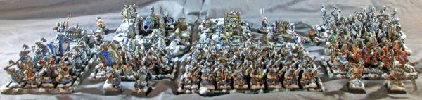
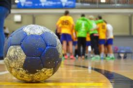

1. Algorithms
When i have come on studies i found my new hobby : algorithms. My analitical and logical thinking is helpfull in that field. For me when i have some algorithmic problem is very satisfying when i resolve it. In my common, daily life almost everything see by algorithms or math. Maybe it is not a hobby or interest but fetish or distortion. Who knows?!
2. Algebra
I am interesting in algebra, because of my grandfather. He is professor of algebra and number theory and he has influence on me in this field. On algebra in studies i was good student without any problems, so i think it was influence of genes. This field like algebra is for me very interesting and if i will choose to be o lecturer definitely i will choose field like algebra.
3. Scale modelling
This hobby was started when i got on my birthday scale model of titanic. It was almost 260 pieces. And i used to build it full tube of glue and few meters of thread to represent ropes. When i finished it he looks gorgeous. That is how i started my hobby. It's very satisfying when you build himself a great vehicle from a lot of very small pieces. It is a great feeling. Did you try it? You should!
4. Battle game of miniatures
Since i was 15 i have played in warhammer fantasy battle. Now i've changed my priority miniatures to The 9th Age Fantasy battle. I love glue bits into miniatures and after that paint it into great dwarven battle throng. Also myself create miniatures by sculpting and modelling. My favourite fractions are dwarfs each kind of.
5. Sport
I love sport since i was child. The most i like team sports like handball and football. In high school i was in school representation in handball. That is my favourite sport and i feel fillfull when i am playing in it. In primary school i was the fastes in class what was making greeat advantage for me in sports like football. I do not prefer watching matches but i prefer, and i love, playing in it myself with friends or coliques from playground.